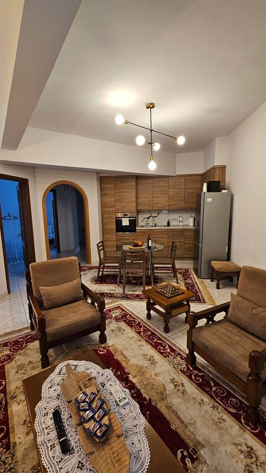
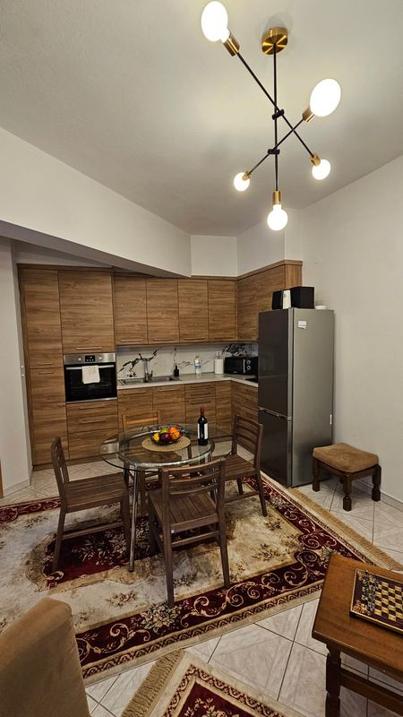
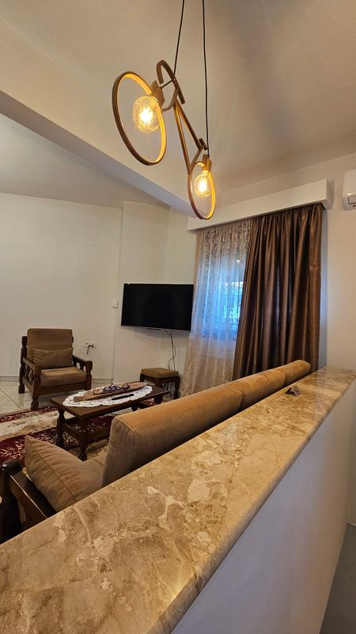
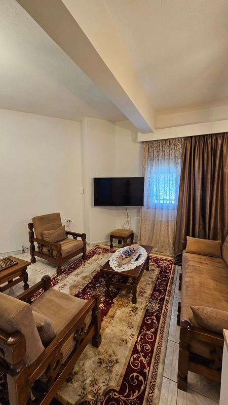

Για το κατάλυμα
έως 8 άτομα · 3 υπνοδωμάτια · 4 κρεβάτια · 2 καναπέδες-κρεβάτια · 1 μπάνιο · 110 τ.μ.
Ευρύχωρο σπίτι 110 τ.μ. στο κέντρο της Σιάτιστας, δίπλα στην πλατεία, με εστιατόρια, καφετέριες και φούρνο σε λίγα βήματα. Ιδανικό για οικογένειες και παρέες.
Μεγάλο σαλόνι με παραδοσιακά ξύλινα έπιπλα, καναπέ που ανοίγει σε κρεβάτι, μεγάλη τηλεόραση, κλιματισμό και σκάκι για τα βράδια. Δίπλα, η τραπεζαρία και η πλήρως εξοπλισμένη κουζίνα με φούρνο, εστίες, ψυγείο, φούρνο μικροκυμάτων και καφετιέρα.
Τρία υπνοδωμάτια με τηλεόραση: δύο με διπλό κρεβάτι, ένα με δύο μονά κρεβάτια και πολυθρόνα που ανοίγει σε κρεβάτι.
Μεγάλο μπάνιο με μπανιέρα, πλυντήριο ρούχων, πετσέτες και προϊόντα περιποίησης.
Παροχές
- Wi-Fi
- Κλιματισμός
- Θέρμανση
- Τηλεόραση
- Πλήρως εξοπλισμένη κουζίνα
- Καφετιέρα Nespresso
- Καφετιέρα φίλτρου
- Φούρνος και μικροκυμάτων
- Πλυντήριο ρούχων
- Καναπές-κρεβάτι
- Σεντόνια και μαξιλαροθήκες
- Πετσέτες μπάνιου και προσώπου
- Σαμπουάν και αφρόλουτρο
- Κέρασμα καλωσορίσματος: κρασί, μπισκότα και καφέδες
- Πάρκινγκ
- Κατοικίδια κατόπιν αιτήματος
- Βρεφικό παρκοκρέβατο δωρεάν
Τοποθεσία
Πλατεία 3 Πηγάδια 19, 503 00 Σιάτιστα
- Γρεβενά: 28,8 χλμ.
- Κοζάνη: 27,3 χλμ.
- Καστοριά: 49,5 χλμ.